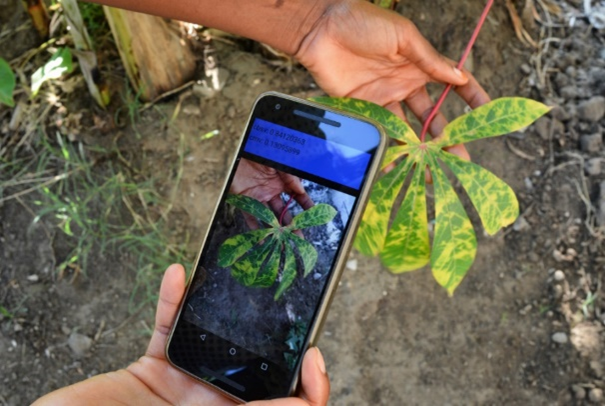
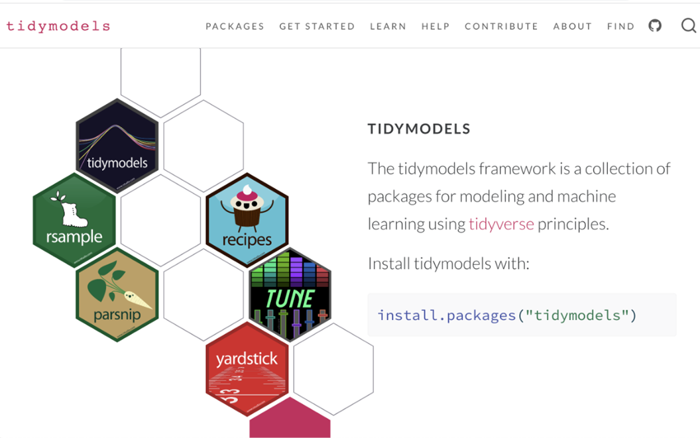

UNLOCKING INSIGHTS:
End-To-End Machine Learning(Supervised Machine Learning)
Introduction to Machine Learning (ML)
Artificial intelligence (AI) is a technology that equips machines with the ability to simulate human behaviour, specifically cognitive processes.
Machine learning (ML) is a branch of AI that uses data and algorithms to learn in the same way humans do, gradually improving its accuracy. Machine learning algorithms use historical data as input to predict new output values.

Image credit: GeoPard Agriculture
ML/AI Use Case in Agriculture (ML)
Akilimo (https://akilimo.org/) combines ML with state-of-the-art crop models, geospatial statistics, and economic optimization algorithms to provide tailored recommendations that maximize net returns on investments within a user-defined budget.

NuruAI (https://plantvillage.psu.edu/)) by IITA and Pennsylvania State University (USA) employs AI with ML to recognize symptoms of cassava brown streak disease, cassava mosaic disease, cassava green mite damage, and the healthy condition from images of cassava leaves.
RiceAdvice (https://riceadvice.info) a smartphone app developed by the Africa Rice Center (AfricaRice), employs ML as part of its modeling framework. It provides field-specific management guidelines for rice production systems in Africa. The guidelines are generated based on farmers’ answers to multiple-choice questions about crop management practices and market conditions.
Introduction to Machine Learning (ML)

Source: https://xkcd.com/1838/

Supervised Learning: the goal is to learn a mapping from inputs to outputs, allowing the model to make predictions on new, unseen data. Common algorithms include linear regression, logistic regression, decision trees, support vector machines, random forest, etc.
ML: Key Considerations
When working with machine learning, several key considerations should be taken into account to ensure quality model.
Data Quality: The quality of the data used for training is crucial because the success of a machine learning model heavily depends on it. This includes ensuring that the data is accurate, complete, and representative of the problem domain.
Sample Size: To have reliable model for prediction, the sample size has to be sufficiently large.
Feature Engineering: This is the process of creating and transforming variables (features) from raw data to enhance the predictive power of ML models. These features can be numerical, categorical, etc. Knowing the data type and the unit of measurement of each feature is very important in performing feature engineering.
Feature Selection: Identifying the right features (input variables) that contribute to the model’s performance is important. Irrelevant or redundant features can lead to overfitting and reduced model accuracy. Model Selection: Choosing the appropriate algorithm or model architecture based on the problem type (classification, regression, clustering, etc.) and the nature of the data is vital. Different models have different strengths and weaknesses.
Overfitting and Underfitting: Balancing the model’s complexity is essential. Overfitting occurs when a model learns the training data too well, including noise, while underfitting happens when a model is too simple to capture the underlying patterns.
Hyperparameter Tuning: Many machine learning models have hyperparameters that need to be set before training. Tuning these parameters can significantly impact model performance and often requires techniques like grid search or random search.
Evaluation Metrics: Selecting appropriate metrics to evaluate model performance is crucial. Common metrics include accuracy, precision, recall, F1-score, and area under the ROC curve (AUC-ROC) for the classification task, R-squared, RMSE, and MAE for the regression task.
Computing Power: This is very important because not machines (laptop or desktop) have the power to handle certain ML task. When the data is large, which is usually the case in a typical ML task, machines with high processing power are recommended.
Steps in Machine Learning
STEP 0 - Define the Problem and Collect/Gather the data that will be used to train the model
STEP 1 - Data pre-processing: * Clean the dataset to handle missing values, incorrect data, and remove duplicates.
Perform exploratory data analysis (EDA) to understand the patterns, trends, and relationships within the data
Divide the data into training and test sets Data transformation and normalization (training and test sets) to make it suitable for modeling.
STEP 2 - Train the Model: * Choose an ML model appropriate with the data (the target)
Cross-validation: Divide the training dataset into “k” subsets or “folds”. The model training and validation process is repeated “k” times, with each of the k folds used exactly once as the validation data, and the remaining k-1 folds used as training data
Tune the model (some ML): based on the performance metrics, adjust the model parameters. Hyperparameter tuning can be done manually or through automated methods like grid search or random search.
Introduction to Tidymodels (ML)


Data
To dive into the tidymodels proper, let us look at the data. Let’s consider the Honey dataset (247,903 records). This is a dataset in the public domain (Kaggle)
The Objective here is to predict the variable purity of honey using the features described below.
- Purity: Represents the purity of the honey sample, ranging from 0.01 to 1.00.
- CS (Color Score): Represents the color score of the honey sample, ranging from 1.0 to 10.0.
- Density: Represents the density of the honey sample in grams per cubic centimeter at 25?C, ranging from 1.21 to 1.86.
- WC (Water Content): Represents the water content in the honey sample, ranging from 12.0% to 25.0%.
- pH: Represents the pH level of the honey sample, ranging from 2.50 to 7.50.
- EC (Electrical Conductivity): Represents the electrical conductivity of the honey sample in milliSiemens per centimeter.
- F (Fructose Level): Represents the fructose level of the honey sample, ranging from 20 to 50.
- G (Glucose Level): Represents the glucose level of the honey sample, ranging from 20 to 45.
- Pollen_analysis: Represents the floral source of the honey sample.
- Price: The calculated price of the honey.
Classification Task (ML)
In the regression task the response variable is quantitative. However, in several instances, the response variable is qualitative i.e. plant health status - healthy or not healthy, or disease severity status - mild, moderate, and severe, etc. Qualitative variables are referred to as categorical variables. The goal of classification is to predict the probability that an instance belongs to a particular class or not. However, the predictors can either be quantitative or qualitative variables.
In this part we go through the same procedure as the regression task. The major differences are the the specification of mode in the recipe function and the evaluation metrics. We are still going to use the random forest algorithm since it is both a classification and regression task.
Let’s use the apple.csv dataset with 4,000 observations. This dataset contains information about various attributes of a set of fruits, providing insights into their characteristics.
The dataset includes the following key features:
- A_id: Unique identifier for each fruit
- Size: Size of the fruit
- Weight: Weight of the fruit
- Sweetness: Degree of sweetness of the fruit
- Crunchiness: Texture indicating the crunchiness of the fruit
- Juiciness: Level of juiciness of the fruit
- Ripeness: Stage of ripeness of the fruit
- Acidity: Acidity level of the fruit
- Quality: Overall quality of the fruit
The objective of this exercise is to build a model to predict the quality rating of the apple fruits based on their features.